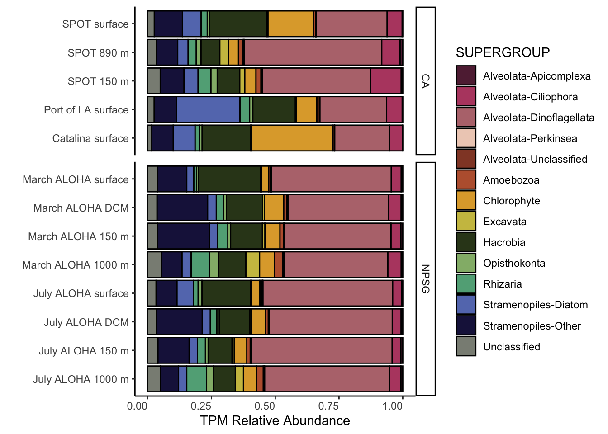

library(tidyverse)
library(data.table)
library(compositions)
library(patchwork)Analysis of metatranscriptome data
Premise
We have taken outputs from eukrhythmic and performed transcript-level normalization so we can do downstream analysis. There are two core questions for this metatranscriptome study that can be subset into untargeted and targeted approaches. Questions stem from previous studies at both the NPSG and sites off of coastal California.
| (1) How does nutrient utilization among euphotic zone phytoplankton vary between coastal California and the NPSG? | (2) Do we see a similar euphotic vs. sub-euphotic shift in the metabolic potential of taxa observed at coastal California and the NPSG? | |
| Untargeted |
|
|
| Targeted | SUBSET only those 4 groups from above. Run the count normalization, then isolate the key genes of interest. What is happening with critical N&P pathways? | SUBSET only those 4 groups from above. Run the count normalization, then isolate the all the key genes of interest. Paying particular attention to phagotrophy-based genes. |
Set up working R environment
Whole community analysis
Below, we will import the averaged (across replicates) and scaled transcript per million (TPM) values so we can look at the overall protistan community structure.
Input all TPM results
Below R objects sourced by first isolating only the eukaryotic transcripts, averaging across replicates, and placing into long format.
# | echo: true
# | eval: false
load(file = "Avg_scaled_tpm_08222023.RData", verbose = T)
taxfxn <- read.csv("TaxonomicAndFunctionalAnnotations.csv")Import metadata as well.
# metadata_tmp <- read.delim("input-data/complete-sample-list.txt", header = TRUE, sep = ",")
# sample_metadata <- read.csv("input-data/sample_table.csv") %>%
# unite(SAMPLE, Sample, Replicate, sep = "_", remove = FALSE) %>%
# select(RUN = SRR, everything()) %>%
# right_join(metadata_tmp)
# write.csv(sample_metadata, file = "input-data/sample-metadata.csv")
sample_metadata_1 <- read.csv("input-data/sample-metadata.csv")
sample_metadata <- sample_metadata_1 %>%
mutate(SAMPLE_MATCH = sub("_[^_]+$", "", SAMPLE))
sample_metadata X RUN SAMN SAMPLE Sample Replicate
1 1 SRR6048900 SAMN07647713 July_1000m_Rep1andRep2 July_1000m Rep1andRep2
2 2 SRR6048899 SAMN07647714 July_150m_Rep1andRep2 July_150m Rep1andRep2
3 3 SRR6048898 SAMN07647715 July_5m_Rep1 July_5m Rep1
4 4 SRR6048897 SAMN07647716 July_5m_Rep2 July_5m Rep2
5 5 SRR6048896 SAMN07647717 July_DCM_Rep1 July_DCM Rep1
6 6 SRR6048895 SAMN07647718 July_DCM_Rep2 July_DCM Rep2
7 7 SRR6048894 SAMN07647719 March_1000m_Rep1andRep2 March_1000m Rep1andRep2
8 8 SRR6048893 SAMN07647720 March_150m_Rep1andRep2 March_150m Rep1andRep2
9 9 SRR6048892 SAMN07647721 March_5m_Rep1 March_5m Rep1
10 10 SRR6048891 SAMN07647722 March_5m_Rep2 March_5m Rep2
11 11 SRR6048902 SAMN07647723 March_DCM_Rep1 March_DCM Rep1
12 12 SRR6048901 SAMN07647724 March_DCM_Rep2 March_DCM Rep2
13 13 SRR11178183 SAMN14206057 Catalina_19 Catalina 19
14 14 SRR11178182 SAMN14206058 Catalina_20 Catalina 20
15 15 SRR11178173 SAMN14206059 Catalina_21 Catalina 21
16 16 SRR11178172 SAMN14206060 Catalina_22 Catalina 22
17 17 SRR11178171 SAMN14206061 Catalina_23 Catalina 23
18 18 SRR11178170 SAMN14206062 Catalina_24 Catalina 24
19 19 SRR11178169 SAMN14206063 PortofLA_1 PortofLA 1
20 20 SRR11178168 SAMN14206064 PortofLA_2 PortofLA 2
21 21 SRR11178167 SAMN14206065 PortofLA_3 PortofLA 3
22 22 SRR11178166 SAMN14206066 PortofLA_4 PortofLA 4
23 23 SRR11178181 SAMN14206067 PortofLA_5 PortofLA 5
24 24 SRR11178180 SAMN14206068 PortofLA_6 PortofLA 6
25 25 SRR5799332 SAMN07269832 SPOT_150m_Rep1and2 SPOT_150m Rep1and2
26 26 SRR5799333 SAMN07269833 SPOT_150m_Rep3and4 SPOT_150m Rep3and4
27 27 SRR5799340 SAMN07269834 SPOT_150m_Rep5and6 SPOT_150m Rep5and6
28 28 SRR5799341 SAMN07269835 SPOT_890m_Rep1and2 SPOT_890m Rep1and2
29 29 SRR5799343 SAMN07269836 SPOT_890m_Rep3and4 SPOT_890m Rep3and4
30 30 SRR5799344 SAMN07269837 SPOT_890m_Rep5and6 SPOT_890m Rep5and6
31 31 SRR5799342 SAMN07269838 SPOT_890m_Rep7 SPOT_890m Rep7
32 32 SRR5799338 SAMN07269826 SPOT_surface_7 SPOT_surface 7
33 33 SRR5799339 SAMN07269827 SPOT_surface_8 SPOT_surface 8
34 34 SRR5799336 SAMN07269828 SPOT_surface_9 SPOT_surface 9
35 35 SRR5799337 SAMN07269829 SPOT_surface_10 SPOT_surface 10
36 36 SRR5799334 SAMN07269830 SPOT_surface_11 SPOT_surface 11
37 37 SRR5799335 SAMN07269831 SPOT_surface_12 SPOT_surface 12
38 38 SRR11178179 SAMN14206069 SPOT_surface_13 SPOT_surface 13
39 39 SRR11178178 SAMN14206070 SPOT_surface_14 SPOT_surface 14
40 40 SRR11178177 SAMN14206071 SPOT_surface_!5 SPOT_surface !5
41 41 SRR11178176 SAMN14206072 SPOT_surface_16 SPOT_surface 16
42 42 SRR11178175 SAMN14206073 SPOT_surface_17 SPOT_surface 17
43 43 SRR11178174 SAMN14206074 SPOT_surface_18 SPOT_surface 18
BASES BIOPROJECT BIOSAMPLE DATE EXPERIMENT
1 22179808750 PRJNA406025 SAMN07647713 2015-07-30 SRX3195831
2 22251034000 PRJNA406025 SAMN07647714 2015-07-30 SRX3195832
3 36858334750 PRJNA406025 SAMN07647715 2015-07-30 SRX3195833
4 28427020000 PRJNA406025 SAMN07647716 2015-07-30 SRX3195834
5 33698315000 PRJNA406025 SAMN07647717 2015-07-30 SRX3195835
6 30540287750 PRJNA406025 SAMN07647718 2015-07-30 SRX3195836
7 10727941750 PRJNA406025 SAMN07647719 2016-03-27 SRX3195837
8 28071351250 PRJNA406025 SAMN07647720 2016-03-27 SRX3195838
9 35787763750 PRJNA406025 SAMN07647721 2016-03-27 SRX3195839
10 26198209000 PRJNA406025 SAMN07647722 2016-03-27 SRX3195840
11 36850615000 PRJNA406025 SAMN07647723 2016-03-27 SRX3195829
12 25119184500 PRJNA406025 SAMN07647724 2016-03-27 SRX3195830
13 8956532750 PRJNA608423 SAMN14206057 2015-05-21 SRX7798845
14 9890647250 PRJNA608423 SAMN14206058 2015-05-21 SRX7798846
15 9213733750 PRJNA608423 SAMN14206059 2015-05-21 SRX7798855
16 5346436500 PRJNA608423 SAMN14206060 2015-05-21 SRX7798856
17 7289444750 PRJNA608423 SAMN14206061 2015-05-21 SRX7798857
18 11865681500 PRJNA608423 SAMN14206062 2015-05-21 SRX7798858
19 7728633500 PRJNA608423 SAMN14206063 2015-05-20 SRX7798859
20 9733064500 PRJNA608423 SAMN14206064 2015-05-20 SRX7798860
21 4491843250 PRJNA608423 SAMN14206065 2015-05-20 SRX7798861
22 6380099500 PRJNA608423 SAMN14206066 2015-05-20 SRX7798862
23 7907104250 PRJNA608423 SAMN14206067 2015-05-20 SRX7798847
24 9629580250 PRJNA608423 SAMN14206068 2015-05-20 SRX7798848
25 21179947000 PRJNA391503 SAMN07269832 2015-05-20 SRX2978825
26 13838597000 PRJNA391503 SAMN07269833 2015-05-20 SRX2978824
27 24355501250 PRJNA391503 SAMN07269834 2015-05-20 SRX2978817
28 4599264250 PRJNA391503 SAMN07269835 2015-05-20 SRX2978816
29 20218093250 PRJNA391503 SAMN07269836 2015-05-20 SRX2978814
30 15436881250 PRJNA391503 SAMN07269837 2015-05-20 SRX2978813
31 16907100750 PRJNA391503 SAMN07269838 2015-05-20 SRX2978815
32 6490449000 PRJNA391503 SAMN07269826 2015-05-20 SRX2978819
33 3741887000 PRJNA391503 SAMN07269827 2015-05-20 SRX2978818
34 8523152000 PRJNA391503 SAMN07269828 2015-05-20 SRX2978821
35 10675178500 PRJNA391503 SAMN07269829 2015-05-20 SRX2978820
36 8449256000 PRJNA391503 SAMN07269830 2015-05-20 SRX2978823
37 7203720250 PRJNA391503 SAMN07269831 2015-05-20 SRX2978822
38 12565907750 PRJNA608423 SAMN14206069 2015-05-20 SRX7798849
39 7464807500 PRJNA608423 SAMN14206070 2015-05-20 SRX7798850
40 8583553750 PRJNA608423 SAMN14206071 2015-05-20 SRX7798851
41 8126200000 PRJNA608423 SAMN14206072 2015-05-20 SRX7798852
42 8329988250 PRJNA608423 SAMN14206073 2015-05-20 SRX7798853
43 6430857250 PRJNA608423 SAMN14206074 2015-05-20 SRX7798854
LAT_LON LIBRARY SAMPLENAME DEPTH
1 24.54987 N 156.33178 W July_1000m NPSG_ALOHA_1000_July 1000
2 24.54987 N 156.33178 W July_150m NPSG_ALOHA_150_July 150
3 24.54987 N 156.33178 W July_surface_Rep1 NPSG_ALOHA_5_July 5
4 24.54987 N 156.33178 W July_surface_Rep2 NPSG_ALOHA_5_July 5
5 24.54987 N 156.33178 W July_DCM_Rep1 NPSG_ALOHA_119_July 119
6 24.54987 N 156.33178 W July_DCM_Rep2 NPSG_ALOHA_119_July 119
7 24.54987 N 156.33178 W March_1000m NPSG_ALOHA_1000_March 1000
8 24.54987 N 156.33178 W March_150m NPSG_ALOHA_150_March 150
9 24.54987 N 156.33178 W March_surface_Rep1 NPSG_ALOHA_5_March 5
10 24.54987 N 156.33178 W March_surface_Rep2 NPSG_ALOHA_5_March 5
11 24.54987 N 156.33178 W March_DCM_Rep1 NPSG_ALOHA_120_March 120
12 24.54987 N 156.33178 W March_DCM_Rep2 NPSG_ALOHA_120_March 120
13 33.44 N 118.47 W Catalina_19_S22_L004 CA_Catalina_5_May 5
14 33.44 N 118.47 W Catalina_20_S23_L004 CA_Catalina_5_May 5
15 33.44 N 118.47 W Catalina_21_S24_L004 CA_Catalina_5_May 5
16 33.44 N 118.47 W Catalina_22_S25_L004 CA_Catalina_5_May 5
17 33.44 N 118.47 W Catalina_23_S26_L004 CA_Catalina_5_May 5
18 33.44 N 118.47 W Catalina_24_S27_L004 CA_Catalina_5_May 5
19 33.71 N 118.26 W Port_of_LA_1_S1_L001 CA_PortofLA_5_May 5
20 33.71 N 118.26 W Port_of_LA_2_S2_L001 CA_PortofLA_5_May 5
21 33.71 N 118.26 W Port_of_LA_3_S3_L001 CA_PortofLA_5_May 5
22 33.71 N 118.26 W Port_of_LA_4_S4_L001 CA_PortofLA_5_May 5
23 33.71 N 118.26 W Port_of_LA_5_S5_L001 CA_PortofLA_5_May 5
24 33.71 N 118.26 W Port_of_LA_6_S6_L001 CA_PortofLA_5_May 5
25 33.55 N 118.40 W SPOT_150m_25 CA_SPOT_150_May 150
26 33.55 N 118.40 W SPOT_150m_26 CA_SPOT_150_May 150
27 33.55 N 118.40 W SPOT_150m_27 CA_SPOT_150_May 150
28 33.55 N 118.40 W SPOT_890m_28 CA_SPOT_890_May 890
29 33.55 N 118.40 W SPOT_890m_29 CA_SPOT_890_May 890
30 33.55 N 118.40 W SPOT_890m_30 CA_SPOT_890_May 890
31 33.55 N 118.40 W SPOT_890m_31 CA_SPOT_890_May 890
32 33.55 N 118.40 W SPOT_surface_7 CA_SPOT_5_May 5
33 33.55 N 118.40 W SPOT_surface_8 CA_SPOT_5_May 5
34 33.55 N 118.40 W SPOT_surface_9 CA_SPOT_5_May 5
35 33.55 N 118.40 W SPOT_surface_10 CA_SPOT_5_May 5
36 33.55 N 118.40 W SPOT_surface_11 CA_SPOT_5_May 5
37 33.55 N 118.40 W SPOT_surface_12 CA_SPOT_5_May 5
38 33.44 N 118.47 W SPOT_surface_13_S15_L003 CA_SPOT_5_May 5
39 33.44 N 118.47 W SPOT_surface_14_S16_L003 CA_SPOT_5_May 5
40 33.44 N 118.47 W SPOT_surface_15_S17_L003 CA_SPOT_5_May 5
41 33.44 N 118.47 W SPOT_surface_16_S18_L003 CA_SPOT_5_May 5
42 33.44 N 118.47 W SPOT_surface_17_S19_L003 CA_SPOT_5_May 5
43 33.44 N 118.47 W SPOT_surface_18_S20_L003 CA_SPOT_5_May 5
SAMPLE_ID_PARSED DEPTH_CATEGORY REGION PACIFIC_REGION MONTH
1 July ALOHA 1000 m 1000 m ALOHA NPSG July
2 July ALOHA 150 m 150 m ALOHA NPSG July
3 July ALOHA surface surface ALOHA NPSG July
4 July ALOHA surface surface ALOHA NPSG July
5 July ALOHA DCM DCM ALOHA NPSG July
6 July ALOHA DCM DCM ALOHA NPSG July
7 March ALOHA 1000 m 1000 m ALOHA NPSG March
8 March ALOHA 150 m 150 m ALOHA NPSG March
9 March ALOHA surface surface ALOHA NPSG March
10 March ALOHA surface surface ALOHA NPSG March
11 March ALOHA DCM DCM ALOHA NPSG March
12 March ALOHA DCM DCM ALOHA NPSG March
13 Catalina surface surface Catalina CA May
14 Catalina surface surface Catalina CA May
15 Catalina surface surface Catalina CA May
16 Catalina surface surface Catalina CA May
17 Catalina surface surface Catalina CA May
18 Catalina surface surface Catalina CA May
19 Port of LA surface surface PortofLA CA May
20 Port of LA surface surface PortofLA CA May
21 Port of LA surface surface PortofLA CA May
22 Port of LA surface surface PortofLA CA May
23 Port of LA surface surface PortofLA CA May
24 Port of LA surface surface PortofLA CA May
25 SPOT 150 m 150 m SPOT CA May
26 SPOT 150 m 150 m SPOT CA May
27 SPOT 150 m 150 m SPOT CA May
28 SPOT 890 m 890 m SPOT CA May
29 SPOT 890 m 890 m SPOT CA May
30 SPOT 890 m 890 m SPOT CA May
31 SPOT 890 m 890 m SPOT CA May
32 SPOT surface surface SPOT CA May
33 SPOT surface surface SPOT CA May
34 SPOT surface surface SPOT CA May
35 SPOT surface surface SPOT CA May
36 SPOT surface surface SPOT CA May
37 SPOT surface surface SPOT CA May
38 SPOT surface surface SPOT CA May
39 SPOT surface surface SPOT CA May
40 SPOT surface surface SPOT CA May
41 SPOT surface surface SPOT CA May
42 SPOT surface surface SPOT CA May
43 SPOT surface surface SPOT CA May
LIGHT SAMPLE_MATCH
1 Sub-euphotic July_1000m
2 Euphotic July_150m
3 Euphotic July_5m
4 Euphotic July_5m
5 Euphotic July_DCM
6 Euphotic July_DCM
7 Sub-euphotic March_1000m
8 Euphotic March_150m
9 Euphotic March_5m
10 Euphotic March_5m
11 Euphotic March_DCM
12 Euphotic March_DCM
13 Euphotic Catalina
14 Euphotic Catalina
15 Euphotic Catalina
16 Euphotic Catalina
17 Euphotic Catalina
18 Euphotic Catalina
19 Euphotic PortofLA
20 Euphotic PortofLA
21 Euphotic PortofLA
22 Euphotic PortofLA
23 Euphotic PortofLA
24 Euphotic PortofLA
25 Sub-euphotic SPOT_150m
26 Sub-euphotic SPOT_150m
27 Sub-euphotic SPOT_150m
28 Sub-euphotic SPOT_890m
29 Sub-euphotic SPOT_890m
30 Sub-euphotic SPOT_890m
31 Sub-euphotic SPOT_890m
32 Euphotic SPOT_surface
33 Euphotic SPOT_surface
34 Euphotic SPOT_surface
35 Euphotic SPOT_surface
36 Euphotic SPOT_surface
37 Euphotic SPOT_surface
38 Euphotic SPOT_surface
39 Euphotic SPOT_surface
40 Euphotic SPOT_surface
41 Euphotic SPOT_surface
42 Euphotic SPOT_surface
43 Euphotic SPOT_surfaceTaxonomic composition & distribution
Evaluate taxonomic diversity and composition across all sites.
# | echo: true
# | eval: false
length(unique(taxfxn$SequenceID))
# 14840771
length(unique(rownames(mean_counts_df)))
# 14737135# | echo: true
# | eval: false
annotated_mean <- dplyr::left_join(mean_counts_df %>%
mutate(SequenceID = rownames(mean_counts_df)),
taxfxn,
by = "SequenceID")
# 14737135-14737693
## 558 were duplicatedRemove the duplicated annotations and make a base taxonomic dataframe for downstream work.
# | echo: true
# | eval: false
tax_plot <- annotated_mean %>%
select(Domain:Species, starts_with("mean"), SequenceID) %>%
distinct()
# dim(tax_plot) #14737624\# | echo: true
# | eval: false
load("input-data/tax_plot_08222023.RData", verbose = TRUE)# | echo: true
# | eval: false
tax_only <- tax_plot %>%
select(-SequenceID) %>%
pivot_longer(cols = starts_with("mean"), names_to = "SAMPLE", values_to = "scaledTPM") %>%
group_by(SAMPLE, Domain, Supergroup, Phylum, Class, Order, Family, Genus, Species) %>%
summarise(SUM_scaledTPM = sum(scaledTPM)) load("input-data/tax_only_08242023.RData", verbose = TRUE)Loading objects:
tax_onlyPlot domain level
Creating plot to see total number and relative abundance of non-eukaryotic hits in the data.
(tax_only %>%
mutate(DOMAIN = str_squish(Domain),
SAMPLE = str_remove(SAMPLE, "mean.")) %>%
group_by(SAMPLE, DOMAIN) %>%
summarise(SUM = sum(SUM_scaledTPM)) %>%
ggplot(aes(x = SAMPLE, y = SUM, fill = DOMAIN)) +
geom_bar(stat = "identity", position = "stack", color = "black")+
theme_linedraw() +
theme(axis.text.x = element_text(angle = 45, vjust = 1, hjust = 1))) /
(tax_only %>%
mutate(DOMAIN = str_squish(Domain),
SAMPLE = str_remove(SAMPLE, "mean.")) %>%
group_by(SAMPLE, DOMAIN) %>%
summarise(SUM = sum(SUM_scaledTPM)) %>%
ggplot(aes(x = SAMPLE, y = SUM, fill = DOMAIN)) +
geom_bar(stat = "identity", position = "fill", color = "black")+
theme_linedraw() +
theme(axis.text.x = element_text(angle = 45, vjust = 1, hjust = 1)))`summarise()` has grouped output by 'SAMPLE'. You can override using the
`.groups` argument.
`summarise()` has grouped output by 'SAMPLE'. You can override using the
`.groups` argument.
Stats on what % of the data are eukaryotic vs. not.
SUM_TOTAL_TPM <- sum(tax_only$SUM_scaledTPM)
tax_only %>%
mutate(DOMAIN = str_squish(Domain),
SAMPLE = str_remove(SAMPLE, "mean.")) %>%
filter(SUM_scaledTPM > 0) %>% # Remove zeroes
group_by(DOMAIN) %>%
summarise(Sum_of_TPM = sum(SUM_scaledTPM),
Perc_of_total = 100*(Sum_of_TPM/SUM_TOTAL_TPM),
.groups = "rowwise")# A tibble: 4 × 3
# Rowwise: DOMAIN
DOMAIN Sum_of_TPM Perc_of_total
<chr> <dbl> <dbl>
1 Archaea 305556. 0.159
2 Bacteria 5438767. 2.84
3 Eukaryota 185858173. 96.9
4 Unclassified 174159. 0.0908 # Count = count(DOMAIN))Plot to supergroup
# head(tax_only)
tax_only %>%
mutate(DOMAIN = str_squish(Domain),
SUPERGROUP = str_squish(Supergroup),
PHYLUM = str_squish(Phylum),
SAMPLE = str_remove(SAMPLE, "mean.")) %>%
filter(DOMAIN == "Eukaryota") %>%
group_by(SAMPLE, Supergroup) %>%
summarise(SUM = sum(SUM_scaledTPM)) %>%
ggplot(aes(x = SAMPLE, y = SUM, fill = Supergroup)) +
geom_bar(stat = "identity", position = "fill", color = "black")+
theme_linedraw() +
theme(axis.text.x = element_text(angle = 45, vjust = 1, hjust = 1))`summarise()` has grouped output by 'SAMPLE'. You can override using the
`.groups` argument.
Tally composition of the supergroup.
colnames(tax_only) [1] "SAMPLE" "Domain" "Supergroup" "Phylum"
[5] "Class" "Order" "Family" "Genus"
[9] "Species" "SUM_scaledTPM"# unique(tax_only$Phylum)
tax_names <- tax_only %>%
mutate(DOMAIN = str_squish(Domain),
SUPERGROUP = str_squish(Supergroup),
PHYLUM = str_squish(Phylum),
SAMPLE = str_remove(SAMPLE, "mean.")) %>%
filter(DOMAIN == "Eukaryota") %>%
select(DOMAIN, SUPERGROUP, Class:Species) %>%
distinct()Adding missing grouping variables: `SAMPLE`, `Domain`, `Supergroup`, `Phylum`unique(tax_names$Phylum) [1] " Apicomplexa" " Ciliophora" " Dinoflagellata"
[4] " Perkinsea" "Unclassified" " Conosa"
[7] " Discosea" " Lobosa" " Chlorophyta"
[10] " Glaucophyta" " Rhodophyta" " Discoba"
[13] " Cryptophyta" " Hacrobia_X" " Haptophyta"
[16] " Choanoflagellida" " Fungi" " Cercozoa"
[19] " Foraminifera" " Ochrophyta" " Opalozoa"
[22] " Sagenista" " Stramenopiles_X" unique(tax_names$Supergroup)[1] " Alveolata" " Amoebozoa" " Archaeplastida" " Excavata"
[5] " Hacrobia" " Opisthokonta" " Rhizaria" " Stramenopiles"
[9] "Unclassified" Now, reformat taxonomic information to visualize.
unique(tax_only$SAMPLE) [1] "mean.Catalina" "mean.July_1000m" "mean.July_150m"
[4] "mean.July_5m" "mean.July_DCM" "mean.March_1000m"
[7] "mean.March_150m" "mean.March_5m" "mean.March_DCM"
[10] "mean.PortofLA" "mean.SPOT_150m" "mean.SPOT_890m"
[13] "mean.SPOT_surface"# colnames(tax_only)
# head(sample_metadata)
tax_formatted <- data.frame(tax_only) %>%
# Remove preceding spaces in taxonomic names
mutate(across(c(Domain, Supergroup, Phylum, Class, Order, Family, Genus, Species), ~ as.character(str_squish(.)))) %>%
filter(Domain == "Eukaryota" & SUM_scaledTPM > 0) %>%
mutate(SAMPLE_MATCH = str_remove(SAMPLE, "mean.")) %>%
left_join(sample_metadata, by = "SAMPLE_MATCH") %>%
# Taxonomic group curation
mutate(SUPERGROUP = case_when(
Supergroup == "Alveolata" ~ paste(Supergroup, Phylum, sep = "-"),
(Class == "Bacillariophyta" & Supergroup == "Stramenopiles") ~ paste(Supergroup, "Diatom", sep = "-"),
(Class != "Bacillariophyta" & Supergroup == "Stramenopiles") ~ paste(Supergroup, "Other", sep = "-"),
Supergroup == "Archaeplastida" ~ "Chlorophyte",
TRUE ~ Supergroup
))Warning in left_join(., sample_metadata, by = "SAMPLE_MATCH"): Detected an unexpected many-to-many relationship between `x` and `y`.
ℹ Row 1 of `x` matches multiple rows in `y`.
ℹ Row 13 of `y` matches multiple rows in `x`.
ℹ If a many-to-many relationship is expected, set `relationship =
"many-to-many"` to silence this warning.# head(tax_formatted)Assign levels for taxonomic groups.
tax_order_color<-c("#612741","#b74a70","#b7757c","#eecfbf","#92462f","#bb603c","#dfa837","#ccc050","#33431e","#93b778","#61ac86","#657abb","#1c1949","#8a8d84")
supergroup_order <- (as.character(unique(tax_formatted$SUPERGROUP)))
names(tax_order_color) <- (supergroup_order)Figure 1
tax_formatted %>%
mutate(SUPERGROUP = factor(tax_formatted$SUPERGROUP, levels = supergroup_order)) %>%
group_by(SAMPLE_ID_PARSED, PACIFIC_REGION, LIGHT, DEPTH, SUPERGROUP) %>%
summarise(SUM = sum(SUM_scaledTPM)) %>%
ggplot(aes(x = SAMPLE_ID_PARSED, y = SUM, fill = SUPERGROUP)) +
geom_bar(stat = "identity", position = "fill", color = "black")+
facet_grid(rows = vars(PACIFIC_REGION), scales = "free_y", space = "free") +
scale_fill_manual(values = tax_order_color) +
theme_classic() +
coord_flip() +
theme(axis.text.x = element_text(vjust = 1, hjust = 1)) +
labs(x = "", y = "TPM Relative Abundance")`summarise()` has grouped output by 'SAMPLE_ID_PARSED', 'PACIFIC_REGION',
'LIGHT', 'DEPTH'. You can override using the `.groups` argument.
Additional taxonomic resolution
head(tax_formatted) SAMPLE.x Domain Supergroup Phylum Class Order
1 mean.Catalina Eukaryota Alveolata Apicomplexa Colpodellidea Colpodellida
2 mean.Catalina Eukaryota Alveolata Apicomplexa Colpodellidea Colpodellida
3 mean.Catalina Eukaryota Alveolata Apicomplexa Colpodellidea Colpodellida
4 mean.Catalina Eukaryota Alveolata Apicomplexa Colpodellidea Colpodellida
5 mean.Catalina Eukaryota Alveolata Apicomplexa Colpodellidea Colpodellida
6 mean.Catalina Eukaryota Alveolata Apicomplexa Colpodellidea Colpodellida
Family Genus Species SUM_scaledTPM SAMPLE_MATCH X
1 Chromeraceae Chromera Chromera velia 224.8899 Catalina 13
2 Chromeraceae Chromera Chromera velia 224.8899 Catalina 14
3 Chromeraceae Chromera Chromera velia 224.8899 Catalina 15
4 Chromeraceae Chromera Chromera velia 224.8899 Catalina 16
5 Chromeraceae Chromera Chromera velia 224.8899 Catalina 17
6 Chromeraceae Chromera Chromera velia 224.8899 Catalina 18
RUN SAMN SAMPLE.y Sample Replicate BASES
1 SRR11178183 SAMN14206057 Catalina_19 Catalina 19 8956532750
2 SRR11178182 SAMN14206058 Catalina_20 Catalina 20 9890647250
3 SRR11178173 SAMN14206059 Catalina_21 Catalina 21 9213733750
4 SRR11178172 SAMN14206060 Catalina_22 Catalina 22 5346436500
5 SRR11178171 SAMN14206061 Catalina_23 Catalina 23 7289444750
6 SRR11178170 SAMN14206062 Catalina_24 Catalina 24 11865681500
BIOPROJECT BIOSAMPLE DATE EXPERIMENT LAT_LON
1 PRJNA608423 SAMN14206057 2015-05-21 SRX7798845 33.44 N 118.47 W
2 PRJNA608423 SAMN14206058 2015-05-21 SRX7798846 33.44 N 118.47 W
3 PRJNA608423 SAMN14206059 2015-05-21 SRX7798855 33.44 N 118.47 W
4 PRJNA608423 SAMN14206060 2015-05-21 SRX7798856 33.44 N 118.47 W
5 PRJNA608423 SAMN14206061 2015-05-21 SRX7798857 33.44 N 118.47 W
6 PRJNA608423 SAMN14206062 2015-05-21 SRX7798858 33.44 N 118.47 W
LIBRARY SAMPLENAME DEPTH SAMPLE_ID_PARSED DEPTH_CATEGORY
1 Catalina_19_S22_L004 CA_Catalina_5_May 5 Catalina surface surface
2 Catalina_20_S23_L004 CA_Catalina_5_May 5 Catalina surface surface
3 Catalina_21_S24_L004 CA_Catalina_5_May 5 Catalina surface surface
4 Catalina_22_S25_L004 CA_Catalina_5_May 5 Catalina surface surface
5 Catalina_23_S26_L004 CA_Catalina_5_May 5 Catalina surface surface
6 Catalina_24_S27_L004 CA_Catalina_5_May 5 Catalina surface surface
REGION PACIFIC_REGION MONTH LIGHT SUPERGROUP
1 Catalina CA May Euphotic Alveolata-Apicomplexa
2 Catalina CA May Euphotic Alveolata-Apicomplexa
3 Catalina CA May Euphotic Alveolata-Apicomplexa
4 Catalina CA May Euphotic Alveolata-Apicomplexa
5 Catalina CA May Euphotic Alveolata-Apicomplexa
6 Catalina CA May Euphotic Alveolata-Apicomplexaunique(tax_formatted$SUPERGROUP) [1] "Alveolata-Apicomplexa" "Alveolata-Ciliophora"
[3] "Alveolata-Dinoflagellata" "Alveolata-Perkinsea"
[5] "Alveolata-Unclassified" "Amoebozoa"
[7] "Chlorophyte" "Excavata"
[9] "Hacrobia" "Opisthokonta"
[11] "Rhizaria" "Stramenopiles-Diatom"
[13] "Stramenopiles-Other" "Unclassified" tax_interest <- c("Alveolata-Ciliophora", "Alveolata-Dinoflagellata", "Chlorophyte", "Hacrobia", "Rhizaria","Stramenopiles-Diatom")
pink_qual <- c("#fff7f3", "#fcc5c0", "#fa9fb5","#f768a1","#dd3497", "#ae017e", "#7a0177")tax_formatted %>%
mutate(SUPERGROUP = factor(tax_formatted$SUPERGROUP, levels = supergroup_order)) %>%
filter(SUPERGROUP %in% tax_interest) %>%
group_by(SAMPLE_ID_PARSED, PACIFIC_REGION, LIGHT, DEPTH, SUPERGROUP, Class, Order) %>%
summarise(SUM = sum(SUM_scaledTPM)) %>%
ggplot(aes(x = SAMPLE_ID_PARSED, y = Order)) +
geom_tile(stat = "identity", color = "white", aes(fill = log(SUM))) +
facet_grid(cols = vars(PACIFIC_REGION), rows = vars(SUPERGROUP), scales = "free", space = "free") +
scale_fill_stepsn(
# limits = c(-5,5),
# breaks = c(0.0, 3.5, 7.0, 10.5),
show.limits = TRUE,
colors = pink_qual) +
theme_classic() +
# coord_flip() +
theme(axis.text.x = element_text(angle = 45, vjust = 1, hjust = 1),
legend.position = "top") +
labs(x = "", y = "Order")`summarise()` has grouped output by 'SAMPLE_ID_PARSED', 'PACIFIC_REGION',
'LIGHT', 'DEPTH', 'SUPERGROUP', 'Class'. You can override using the `.groups`
argument.Table 1
Get stats on what transcripts were annotated to various levels, etc.
This represents a toy dataset to troubleshoot code.
load("input-data/toy_1000.Rdata", verbose = TRUE)
# Change to original names, so code below can be written
annotated_mean <- annotated_mean_10000
df_ctr_norm <- ctr_norm_10000
head(annotated_mean)How many transcripts are annotated?
data.frame(annotated_mean %>%
count(output = KEGG_ko != "-",
name = "KEGGs") %>%
left_join(annotated_mean %>%
count(output = PFAMs != "-",
name = "PFAMs")) %>%
left_join(annotated_mean %>%
count(output = GOs != "-",
name = "GOs")) %>%
left_join(annotated_mean %>%
count(output = (GOs != "-" & PFAMs != "-" & KEGG_ko != "-"),
name = "All"))) %>%
filter(output == TRUE) %>% select(-output) %>%
pivot_longer(cols = everything(), values_to = "Number annotated") %>%
mutate(Percent_annotated = 100*(`Number annotated`/length(annotated_mean$SequenceID)))| DB | Number of seqs annotated | Percent annotated | |
|---|---|---|---|
| KEGGs | 9970784 | 67.7 | |
| PFAMs | 13595566 | 92.3 | |
| GOs | 5442486 | 36.9 | |
| All | 4963542 | 33.7 |
summary_annotated <- annotated_mean %>%
mutate(SUM = rowSums(across(where(is.numeric)))) %>%
select(SUM, GOs, PFAMs, KEGG_ko, Domain, Supergroup)
# write.csv(summary_annotated, file = "summary_of_annotated_totalTPM.csv")
# sum(summary_annotated$SUM) # TPM amount that is annotatedHow many are annotated and have taxonomic IDs?
noneuk <- c("Unclassified", "Bacteria", "Archaea")
as.data.frame(annotated_mean %>%
count(output = !(Domain %in% noneuk),
name = "IDed as Eukaryote") %>%
left_join(annotated_mean %>%
count(output = !(Domain %in% noneuk) & Supergroup != "Unclassified",
name = "Supergroup level")) %>%
left_join(annotated_mean %>%
count(output = !(Domain %in% noneuk) & Class != "Unclassified",
name = "Class level")) %>%
left_join(annotated_mean %>%
count(output = !(Domain %in% noneuk) & Order != "Unclassified",
name = "Order level")) %>%
left_join(annotated_mean %>%
count(output = !(Domain %in% noneuk) & Family != "Unclassified",
name = "Family level")) %>%
left_join(annotated_mean %>%
count(output = !(Domain %in% noneuk) & Genus != "Unclassified",
name = "Genus level")) %>%
left_join(annotated_mean %>%
count(output = !(Domain %in% noneuk) & Species != "Unclassified",
name = "Species level"))) %>%
filter(output == TRUE) %>% select(-output) %>%
pivot_longer(cols = everything(), values_to = "Number annotated") %>%
mutate(Percent_annotated = 100*(`Number annotated`/length(annotated_mean$SequenceID)))Need to run the above on the HPC.
PCoA with whole community functional profile
Ahead of time, normalized community composition data was center scaled. Below, we can import this dataset and perform principle component analysis.
Import normalized center data.
# Run on HPC
load("normed_center_df_08222023.RData", verbose = TRUE)# Run on HPC
pca_lr <- prcomp(as.data.frame(t(df_ctr_norm)))
variance_lr <- (pca_lr$sdev^2)/sum(pca_lr$sdev^2)Import PCA objects from running R on the HPC.
load("input-data/pca_objects.RData", verbose = TRUE)Loading objects:
pca_df
variance_lrDetermine how appropriate the PCoA is in 2 vs 3 dimensions.
barplot(variance_lr, main = "Log-Ratio PCA Screeplot", xlab = "PC Axis", ylab = "% Variance", cex.names = 1.5, cex.axis = 1.5, cex.lab = 1.5, cex.main = 1.5)pc1 <- round(variance_lr[1] * 100, 2)
pc2 <- round(variance_lr[2] * 100, 2)
# head(sample_metadata)
# svg("Rplot_metat_pca_wholecommunity.svg", width = 7, height = 7)
pca_df %>%
left_join(sample_metadata, by = c("SAMPLE_MATCH" = "SAMPLE")) %>%
mutate(REGION_ORDER = case_when(REGION == "ALOHA" ~ paste("ALOHA", MONTH), TRUE ~ REGION)) %>%
ggplot(aes(x = PC1, y = PC2)) +
geom_jitter(stroke = 1, size = 4, aes(shape = REGION_ORDER, fill = DEPTH_CATEGORY, color = LIGHT)) +
# scale_shape_manual(values = c(21, 22, 23, 24)) +
scale_shape_manual(values = c(24, 25, 23, 22, 21)) +
scale_fill_manual(values = c("#6a51a3", "#f768a1", "#8c96c6", "#fd8d3c", "#238b45")) +
scale_color_manual(values = c("#cccccc", "#252525")) +
theme_linedraw() + coord_fixed(ratio = 1) +
guides(fill = guide_legend(override.aes = list(shape = c(22)))) +
geom_hline(yintercept = 0) + geom_vline(xintercept = 0) +
theme(legend.title = element_blank(),
axis.text = element_text(color = "black", face = "bold", size = 13)) +
labs(x = paste(pc1, "%"), y = paste(pc2, "%"))Untargeted - DE transcripts
Prep to address key questions
Import KEGG IDs
These have been curated.
kegg <- read.csv("../KEGG_DB/combined_kegg.csv")
# head(kegg$KO_number)
curated_kegg <- read.csv("../KEGG_DB/reformat-kegg-pfam-skh.csv")
key_geneid <- curated_kegg %>%
select(-X) %>%
right_join(kegg %>% select(KEGG = KO_number, everything(), -X)) %>%
distinct() %>%
select(starts_with("KeggOrthology_"), Category01, Category02, FullName, GeneID, Gene_identification, KEGG, PFAM, Descriptions, REF = REFs)Joining with `by = join_by(KEGG)`Warning in right_join(., kegg %>% select(KEGG = KO_number, everything(), : Detected an unexpected many-to-many relationship between `x` and `y`.
ℹ Row 1 of `x` matches multiple rows in `y`.
ℹ Row 38 of `y` matches multiple rows in `x`.
ℹ If a many-to-many relationship is expected, set `relationship =
"many-to-many"` to silence this warning.Subset key_geneid dataframe to select what we want from it.
# head(key_geneid)
# unique(key_geneid$KeggOrthology_B)
kegg_ortho_based <- key_geneid %>%
select(KeggOrthology_B, KEGG, GeneID, Gene_identification) %>%
filter(!is.na(KeggOrthology_B)) %>%
distinct()
# dim(key_geneid)
# dim(kegg_ortho_based)
kegg_curated <- key_geneid %>%
select(Category01, Category02, KEGG, GeneID, Gene_identification) %>%
filter(!is.na(Category01)) %>%
distinct()
# dim(kegg_curated)
# unique(kegg_curated$Category01)Create ordered list for genes related to N and P metabolism.
# head(curated_kegg)
geneid_order_nuts <- as.character(curated_kegg %>%
filter(Category01 == "N and P metabolism") %>%
rownames_to_column(var = "ORDER") %>%
select(ORDER, GeneID) %>%
rbind(data.frame(ORDER = 0, GeneID = "Mean")) %>%
distinct() %>% arrange(as.numeric(ORDER)) %>%
select(GeneID) %>%
.[["GeneID"]])
geneid_order_nuts [1] "Mean" "NRT, narK, nrtP, nasA" "amt, AMT, MEP"
[4] "AAPJ" "NR" "nirA"
[7] "HCP" "NPD" "CYNS"
[10] "glnA, GLUL" "GLT1" "GLT(ferredoxin)"
[13] "GLTD" "gdhA" "gdh2"
[16] "CPS1" "OTC, argF, argI" "argG, ASS1"
[19] "argH, ASL" "rocF, arg" "URE"
[22] "ureG" "ureD, ureH" "UT"
[25] "DUR3" "PHO87_91" "PTA"
[28] "NPT" "ARSA" "5-nucleotidase"
[31] "phoD" "GDP" "NTD"
[34] "VTC" "arsC" geneid_order_hets <- as.character(curated_kegg %>%
filter(Category01 == "Phagotrophy") %>%
rownames_to_column(var = "ORDER") %>%
select(ORDER, Category02) %>%
rbind(data.frame(ORDER = 0, Category02 = "Mean")) %>%
arrange(as.numeric(ORDER)) %>%
select(Category02) %>% distinct() %>%
.[["Category02"]])
geneid_order_hets [1] "Mean" "Actin polymerization"
[3] "Chitinase" "Endocytosis"
[5] "Fatty acid biosynthesis" "Fatty acid breakdown"
[7] "Lysosome binding and processing" "Motility and prey recognition"
[9] "Phagosome maturation" "SNARE complex"
[11] "V-type ATPase" Prepare data frames for targeted approach
Data for targeted sections is imported from process-eukrhythmic-output code titled Curated genes only.
load("input-data/Avg_scaled_tpm_curated_08252023.RData", verbose = TRUE)Loading objects:
counts_curated
sample_merged# head(counts_curated)To address question 1, subset to a curated set of genes.
counts_curated_annot <- counts_curated %>%
mutate(KEGG = str_remove(KEGG_ko, "ko:")) %>%
left_join(kegg_curated)Joining with `by = join_by(KEGG)`Warning in left_join(., kegg_curated): Detected an unexpected many-to-many relationship between `x` and `y`.
ℹ Row 5 of `x` matches multiple rows in `y`.
ℹ Row 277 of `y` matches multiple rows in `x`.
ℹ If a many-to-many relationship is expected, set `relationship =
"many-to-many"` to silence this warning.counts_curated_kegg <- counts_curated %>%
mutate(KEGG = str_remove(KEGG_ko, "ko:")) %>%
left_join(kegg_ortho_based)Joining with `by = join_by(KEGG)`Warning in left_join(., kegg_ortho_based): Detected an unexpected many-to-many relationship between `x` and `y`.
ℹ Row 1 of `x` matches multiple rows in `y`.
ℹ Row 614 of `y` matches multiple rows in `x`.
ℹ If a many-to-many relationship is expected, set `relationship =
"many-to-many"` to silence this warning.# head(ctr_norm_curated)load("input-data/normed_center_df_curated_08252023.RData", verbose = TRUE)Loading objects:
ctr_norm_curated
ds_tpm_curatedhead(ctr_norm_curated) SequenceID
1 megahit_ALOHA_July_5m_k51_1000052_flag=0_multi=3.5000_len=279_ALOHA_July_5m.filtered.fasta.p1
2 megahit_ALOHA_July_5m_k51_1000134_flag=1_multi=8.0000_len=201_ALOHA_July_5m.filtered.fasta.p1
3 megahit_ALOHA_July_5m_k51_1000527_flag=1_multi=13.0000_len=230_ALOHA_July_5m.filtered.fasta.p1
4 megahit_ALOHA_July_5m_k51_1000562_flag=1_multi=13.9730_len=236_ALOHA_July_5m.filtered.fasta.p1
5 megahit_ALOHA_July_5m_k51_1000680_flag=1_multi=14.0000_len=771_ALOHA_July_5m.filtered.fasta.p1
6 megahit_ALOHA_July_5m_k51_1000685_flag=0_multi=16.2025_len=372_ALOHA_July_5m.filtered.fasta.p1
SPOT_150m_Rep1and2 SPOT_150m_Rep3and4 SPOT_surface_11 SPOT_surface_12
1 -0.66862 -0.66862 -0.66862 -0.66862
2 -0.66862 -0.66862 -0.66862 -0.66862
3 -0.66862 -0.66862 -0.66862 -0.66862
4 -0.66862 -0.66862 -0.66862 -0.66862
5 -0.66862 -0.66862 -0.66862 2.08898
6 -0.66862 -0.66862 -0.66862 -0.66862
SPOT_surface_9 SPOT_surface_10 SPOT_surface_7 SPOT_surface_8
1 -0.66862 -0.66862 -0.66862 -0.66862
2 -0.66862 -0.66862 -0.66862 -0.66862
3 -0.66862 -0.66862 -0.66862 -0.66862
4 -0.66862 -0.66862 -0.66862 -0.66862
5 -0.66862 -0.66862 -0.66862 -0.66862
6 -0.66862 -0.66862 -0.66862 -0.66862
SPOT_150m_Rep5and6 SPOT_890m_Rep1and2 SPOT_890m_Rep7 SPOT_890m_Rep3and4
1 -0.66862 -0.66862 -0.66862 -0.66862
2 -0.66862 -0.66862 -0.66862 -0.66862
3 -0.66862 -0.66862 -0.66862 -0.66862
4 -0.66862 -0.66862 -0.66862 -0.66862
5 -0.66862 -0.66862 -0.66862 -0.66862
6 -0.66862 -0.66862 -0.66862 -0.66862
SPOT_890m_Rep5and6 March_5m_Rep1 March_150m_Rep1andRep2 July_DCM_Rep2
1 -0.66862 -0.66862 -0.66862 -0.66862
2 -0.66862 -0.66862 -0.66862 -0.66862
3 -0.66862 -0.66862 -0.66862 -0.66862
4 -0.66862 -0.66862 -0.66862 -0.66862
5 -0.66862 -0.66862 -0.66862 -0.66862
6 -0.66862 -0.66862 -0.66862 -0.66862
July_DCM_Rep1 July_5m_Rep1 July_1000m_Rep1andRep2 March_DCM_Rep1
1 -0.66862 1.769635 -0.66862 -0.66862
2 -0.66862 2.881847 -0.66862 -0.66862
3 -0.66862 -0.668620 -0.66862 -0.66862
4 -0.66862 3.889006 -0.66862 -0.66862
5 -0.66862 5.229919 -0.66862 -0.66862
6 -0.66862 5.464715 -0.66862 -0.66862
March_5m_Rep2 March_1000m_Rep1andRep2 July_5m_Rep2 July_150m_Rep1andRep2
1 -0.66862 -0.66862 -0.668620 -0.66862
2 -0.66862 -0.66862 -0.668620 -0.66862
3 -0.66862 -0.66862 4.179680 -0.66862
4 -0.66862 -0.66862 5.305635 -0.66862
5 -0.66862 -0.66862 3.719440 -0.66862
6 -0.66862 -0.66862 3.034110 -0.66862
March_DCM_Rep2 PortofLA_4 PortofLA_3 PortofLA_2 PortofLA_1 Catalina_24
1 -0.66862 -0.66862 -0.66862 -0.66862 -0.66862 -0.668620
2 -0.66862 -0.66862 -0.66862 -0.66862 -0.66862 -0.668620
3 -0.66862 -0.66862 -0.66862 -0.66862 -0.66862 -0.668620
4 -0.66862 -0.66862 -0.66862 -0.66862 -0.66862 0.719916
5 -0.66862 -0.66862 -0.66862 -0.66862 -0.66862 -0.668620
6 -0.66862 -0.66862 -0.66862 -0.66862 -0.66862 -0.668620
Catalina_23 Catalina_22 Catalina_21 SPOT_surface_18 SPOT_surface_17
1 -0.66862 -0.668620 -0.66862 -0.66862 -0.66862
2 -0.66862 -0.668620 -0.66862 -0.66862 -0.66862
3 -0.66862 -0.668620 -0.66862 -0.66862 -0.66862
4 -0.66862 -0.668620 -0.66862 -0.66862 -0.66862
5 -0.66862 -0.668620 -0.66862 -0.66862 -0.66862
6 -0.66862 2.162123 -0.66862 -0.66862 -0.66862
SPOT_surface_16 SPOT_surface_!5 SPOT_surface_14 SPOT_surface_13 PortofLA_6
1 -0.66862 -0.6686200 -0.66862 1.068627 -0.66862
2 -0.66862 -0.6686200 -0.66862 -0.668620 -0.66862
3 -0.66862 -0.6686200 -0.66862 -0.668620 -0.66862
4 0.76628 0.7393821 -0.66862 1.330602 -0.66862
5 -0.66862 -0.6686200 -0.66862 -0.668620 -0.66862
6 -0.66862 -0.6686200 -0.66862 -0.668620 -0.66862
PortofLA_5 Catalina_20 Catalina_19 X rownames ShortSeqID Domain
1 -0.66862 -0.66862 -0.66862 4 3 Seq_46717283 Eukaryota
2 -0.66862 -0.66862 -0.66862 13 12 Seq_5362361 Eukaryota
3 -0.66862 -0.66862 -0.66862 47 46 Seq_5968972 Eukaryota
4 -0.66862 -0.66862 -0.66862 52 51 Seq_38019630 Eukaryota
5 -0.66862 -0.66862 -0.66862 57 56 Seq_42359935 Eukaryota
6 -0.66862 -0.66862 -0.66862 59 58 Seq_22294350 Eukaryota
Supergroup Phylum Class Order
1 Hacrobia Haptophyta Prymnesiophyceae Prymnesiales
2 Alveolata Dinoflagellata Dinophyceae Prorocentrales
3 Alveolata Dinoflagellata Dinophyceae Suessiales
4 Rhizaria Foraminifera Globothalamea Globothalamea_X
5 Stramenopiles Ochrophyta Bacillariophyta Chaetocerotophycidae
6 Alveolata Ciliophora Spirotrichea Tintinnida
Family Genus Species
1 Chrysochromulinaceae Chrysochromulina Chrysochromulina ericina
2 Prorocentraceae Prorocentrum Unclassified
3 Suessiaceae Unclassified Unclassified
4 Globothalamea_XX Unclassified Unclassified
5 Chaetocerotales Chaetoceros Unclassified
6 Unclassified Unclassified Unclassified
GOs
1 GO:0002376,GO:0003674,GO:0003824,GO:0004611,GO:0004612,GO:0005575,GO:0005622,GO:0005623,GO:0005634,GO:0005730,GO:0005737,GO:0005829,GO:0005975,GO:0005996,GO:0006006,GO:0006082,GO:0006083,GO:0006094,GO:0006950,GO:0006952,GO:0006955,GO:0007154,GO:0008150,GO:0008152,GO:0009058,GO:0009267,GO:0009605,GO:0009607,GO:0009620,GO:0009814,GO:0009817,GO:0009987,GO:0009991,GO:0010035,GO:0010038,GO:0015976,GO:0016020,GO:0016036,GO:0016051,GO:0016829,GO:0016830,GO:0016831,GO:0016999,GO:0017144,GO:0019318,GO:0019319,GO:0019752,GO:0031667,GO:0031668,GO:0031669,GO:0031974,GO:0031981,GO:0032787,GO:0033554,GO:0042221,GO:0042594,GO:0043207,GO:0043226,GO:0043227,GO:0043228,GO:0043229,GO:0043231,GO:0043232,GO:0043233,GO:0043436,GO:0044237,GO:0044238,GO:0044281,GO:0044283,GO:0044422,GO:0044424,GO:0044428,GO:0044444,GO:0044446,GO:0044464,GO:0045087,GO:0046364,GO:0046686,GO:0050832,GO:0050896,GO:0051704,GO:0051707,GO:0051716,GO:0070013,GO:0071496,GO:0071704,GO:0098542,GO:1901576
2 -
3 -
4 -
5 -
6 GO:0000323,GO:0003674,GO:0003824,GO:0004175,GO:0004197,GO:0005575,GO:0005576,GO:0005615,GO:0005622,GO:0005623,GO:0005737,GO:0005764,GO:0005773,GO:0006508,GO:0006807,GO:0008150,GO:0008152,GO:0008233,GO:0008234,GO:0009056,GO:0009057,GO:0009987,GO:0016787,GO:0019538,GO:0030163,GO:0043170,GO:0043226,GO:0043227,GO:0043229,GO:0043231,GO:0044237,GO:0044238,GO:0044248,GO:0044257,GO:0044260,GO:0044265,GO:0044267,GO:0044421,GO:0044424,GO:0044444,GO:0044464,GO:0051603,GO:0070011,GO:0071704,GO:0140096,GO:1901564,GO:1901565,GO:1901575
PFAMs KEGG_ko
1 PEPCK_ATP ko:K01610
2 Mqo ko:K00116
3 Acyl_transf_1,Ank,Ank_2 ko:K00645
4 Actin ko:K05692
5 Calreticulin ko:K08057
6 Inhibitor_I29,Peptidase_C1 ko:K01365# Rename column headers
names_orig <- colnames(ctr_norm_curated)
names_new <- sub("_[^_]+$", "", names_orig)
# names_new
colnames(ctr_norm_curated) <- names_newMean across columns that have the same name - which are replicates.
# colnames(ctr_norm_curated)
mean_ctr_df <- ctr_norm_curated %>%
cbind(as.list(.) %>%
Filter(is.numeric, .) %>%
split(names(.)) %>%
lapply(as.data.frame) %>%
lapply(rowMeans) %>%
setNames(paste0("mean.", names(.)))) %>%
select(starts_with("mean"), SequenceID, ShortSeqID, Domain:Species, GOs, PFAMs, KEGG) %>%
select(-mean.rownames, -mean.X)
# colnames(mean_ctr_df)Join with KEGG information that is curated
# Repeat with ctr_norm_curated
ctr_curated_annot <- mean_ctr_df %>%
mutate(KEGG = str_remove(KEGG, "ko:")) %>%
left_join(kegg_curated)Joining with `by = join_by(KEGG)`Warning in left_join(., kegg_curated): Detected an unexpected many-to-many relationship between `x` and `y`.
ℹ Row 5 of `x` matches multiple rows in `y`.
ℹ Row 277 of `y` matches multiple rows in `x`.
ℹ If a many-to-many relationship is expected, set `relationship =
"many-to-many"` to silence this warning.ctr_curated_kegg <- mean_ctr_df %>%
mutate(KEGG = str_remove(KEGG, "ko:")) %>%
left_join(kegg_ortho_based)Joining with `by = join_by(KEGG)`Warning in left_join(., kegg_ortho_based): Detected an unexpected many-to-many relationship between `x` and `y`.
ℹ Row 1 of `x` matches multiple rows in `y`.
ℹ Row 614 of `y` matches multiple rows in `x`.
ℹ If a many-to-many relationship is expected, set `relationship =
"many-to-many"` to silence this warning.Use ‘mean_ctr_df’ for downstream targeted analyses.
Question 1
How does nutrient utilization among euphotic zone phytoplankton vary between coastal California and the NPSG?
Untargeted
Complete code: /scripts/get_euphotic_DE_bytaxa.R
Use output files below for further analysis below.
Stats on DE transcripts
de_all <- read.csv("input-data/bytaxa_euphoticzone_DE.csv")
de_allExample code for compiling DE transcripts by individual taxa (from script):
load("euphotic_by_taxa.RData", verbose = TRUE)res_hapto <- results(de_hapto, alpha=0.05)
plot_hapto <- data.frame(res_hapto) %>%
mutate(REGULATION = case_when(
log2FoldChange > 0 ~ "upregulated in CA",
log2FoldChange < 0 ~ "upregulated in NPSG"
),
SIGNIFICANT = case_when(
pvalue <= 0.05 ~ "Significantly",
TRUE ~ "Not significantly"
)) %>%
ggplot(aes(x = baseMean, y = log2FoldChange, color = SIGNIFICANT)) +
geom_point(stat = "identity") +
scale_x_log10() +
theme_classic() +
scale_color_manual(values = c("#878787", "#d73027")) +
labs(title = mcols(res_hapto)$description[2])
hapto_transcripts <- data.frame(res_hapto) %>%
mutate(REGULATION = case_when(
log2FoldChange > 0 ~ "upregulated in CA",
log2FoldChange < 0 ~ "upregulated in NPSG"
),
SIGNIFICANT = case_when(
pvalue <= 0.05 ~ "Significantly",
TRUE ~ "Not significantly"
)) %>%
filter(SIGNIFICANT == "Significantly") %>%
rownames_to_column(var = "SequenceID") %>%
mutate(TAXA = "Haptophyte")
write.csv(hapto_transcripts, file = "hapto_sig_de_euphotic.csv")See script: euphotic_region_bytax.R.
# List of DE transcripts - what is upregulated vs downregulated by taxa
de_all <- read.csv("bytaxa_euphoticzone_DE.csv")
#
de_chloro <- read.csv("chloro_sig_de_euphotic.csv")
de_dino <- read.csv("dinos_sig_de_euphotic.csv")
de_diatom <- read.csv("diatom_sig_de_euphotic.csv")
de_hapto <- read.csv("hapto_sig_de_euphotic.csv")Sequence IDs are all unique, because they correspond to taxa. Therefore, we need to include gene-level IDs so we can compare what is DE across CA vs. NPSG.
# Import KEGG information
taxfxn <- read.csv("TaxonomicAndFunctionalAnnotations.csv")
alltax <- de_chloro %>%
rbind(de_diatom) %>%
rbind(de_dino) %>%
rbind(de_hapto) %>%
select(SequenceID, log2FoldChange, pvalue, REGULATION, TAXA) %>%
left_join(taxfxn)This alltax Robj is helpful for coming back to getting more taxonomic resolution.
What is shared versus unique?
alltax_compareDE <- alltax %>%
unite(GENEID_ko_pfam, PFAMs, KEGG_ko, sep = ";") %>%
select(REGULATION, TAXA, log2FoldChange, GENEID_ko_pfam) %>%
group_by(REGULATION, GENEID_ko_pfam, TAXA) %>%
summarise(n = dplyr::n(), .groups = "drop") %>%
filter(n > 1L) %>%
pivot_wider(names_from = TAXA, values_from = n)
save(alltax_compareDE, alltax, file = "taxa-untarget-q1.RData")Local - untargeted mining
load("input-data/taxa-untarget-q1.RData")library(ggupset)
alltax %>%
unite(GENEID_ko_pfam, PFAMs, KEGG_ko, sep = ";") %>%
select(REGULATION, TAXA, log2FoldChange, GENEID_ko_pfam) %>%
group_by(REGULATION, GENEID_ko_pfam, TAXA) %>%
summarise(n = dplyr::n(), .groups = "drop") %>%
filter(n > 1L) %>%
group_by(GENEID_ko_pfam, REGULATION) %>%
summarise(TAXA = list(TAXA)) %>%
ggplot(aes(x = TAXA)) +
geom_bar(aes(fill = REGULATION)) +
scale_fill_manual(values = c("#74add1", "#fdae61")) +
scale_x_upset(order_by = "freq") +
theme_classic() +
theme(axis.text.x = element_text(vjust = 1, hjust = 1)) +
labs(x = "", y = "TPM Relative Abundance")`summarise()` has grouped output by 'GENEID_ko_pfam'. You can override using
the `.groups` argument.Based on this plot, it looks like these taxa primarily have their own strategies in the coastal California environment versus the NPSG environment.
head(alltax) SequenceID
1 megahit_ALOHA_July_5m_k51_100623_flag=1_multi=8.4034_len=574_ALOHA_July_5m.filtered.fasta.p1
2 megahit_ALOHA_July_5m_k51_1008920_flag=0_multi=17.7732_len=342_ALOHA_July_5m.filtered.fasta.p1
3 megahit_ALOHA_July_5m_k51_1052293_flag=1_multi=40.0969_len=505_ALOHA_July_5m.filtered.fasta.p1
4 megahit_ALOHA_July_5m_k51_108347_flag=0_multi=37.3628_len=820_ALOHA_July_5m.filtered.fasta.p1
5 megahit_ALOHA_July_5m_k51_112715_flag=1_multi=108.5316_len=557_ALOHA_July_5m.filtered.fasta.p1
6 megahit_ALOHA_July_5m_k51_1130367_flag=1_multi=22.0000_len=906_ALOHA_July_5m.filtered.fasta.p2
log2FoldChange pvalue REGULATION TAXA X rownames
1 5.463782 2.766358e-02 upregulated in CA Chlorophyte 690 689
2 3.609570 2.497255e-02 upregulated in CA Chlorophyte 1005 1004
3 7.575613 7.550389e-03 upregulated in CA Chlorophyte 5811 5810
4 5.558651 3.243688e-03 upregulated in CA Chlorophyte 9239 9238
5 25.186544 6.509685e-15 upregulated in CA Chlorophyte 14151 14150
6 2.703206 4.347091e-03 upregulated in CA Chlorophyte 14507 14506
ShortSeqID Domain Supergroup Phylum Class
1 Seq_48897575 Eukaryota Archaeplastida Chlorophyta Chlorophyceae
2 Seq_13728792 Eukaryota Archaeplastida Chlorophyta Unclassified
3 Seq_13623672 Eukaryota Archaeplastida Chlorophyta Chlorodendrophyceae
4 Seq_45857102 Eukaryota Archaeplastida Chlorophyta Pyramimonadales
5 Seq_5315521 Eukaryota Archaeplastida Chlorophyta Pyramimonadales
6 Seq_16589800 Eukaryota Archaeplastida Chlorophyta Nephroselmidophyceae
Order Family Genus Species
1 Chlamydomonadales Chlamydomonadales_X Unclassified Unclassified
2 Unclassified Unclassified Unclassified Unclassified
3 Chlorodendrales Chlorodendraceae Tetraselmis Unclassified
4 Pyramimonadales_X Unclassified Unclassified Unclassified
5 Pyramimonadales_X Pyramimonadales_XX Unclassified Unclassified
6 Unclassified Unclassified Unclassified Unclassified
GOs
1 GO:0005575,GO:0005623,GO:0005929,GO:0031514,GO:0042995,GO:0043226,GO:0044464,GO:0120025
2 -
3 -
4 -
5 GO:0000028,GO:0000054,GO:0000056,GO:0002181,GO:0003674,GO:0003735,GO:0005198,GO:0005575,GO:0005622,GO:0005623,GO:0005737,GO:0005829,GO:0005840,GO:0006403,GO:0006405,GO:0006407,GO:0006412,GO:0006518,GO:0006611,GO:0006807,GO:0006810,GO:0006886,GO:0006913,GO:0006996,GO:0008104,GO:0008150,GO:0008152,GO:0009058,GO:0009059,GO:0009987,GO:0010467,GO:0015031,GO:0015833,GO:0015931,GO:0015935,GO:0016043,GO:0019538,GO:0022607,GO:0022613,GO:0022618,GO:0022626,GO:0022627,GO:0031503,GO:0032991,GO:0033036,GO:0033750,GO:0034613,GO:0034622,GO:0034641,GO:0034645,GO:0042254,GO:0042255,GO:0042274,GO:0042886,GO:0043043,GO:0043170,GO:0043226,GO:0043228,GO:0043229,GO:0043232,GO:0043603,GO:0043604,GO:0043933,GO:0044085,GO:0044237,GO:0044238,GO:0044249,GO:0044260,GO:0044267,GO:0044271,GO:0044391,GO:0044422,GO:0044424,GO:0044444,GO:0044445,GO:0044446,GO:0044464,GO:0045184,GO:0046907,GO:0050657,GO:0050658,GO:0051029,GO:0051168,GO:0051169,GO:0051179,GO:0051234,GO:0051236,GO:0051640,GO:0051641,GO:0051649,GO:0051656,GO:0065003,GO:0070727,GO:0070925,GO:0071166,GO:0071426,GO:0071428,GO:0071702,GO:0071704,GO:0071705,GO:0071826,GO:0071840,GO:0097064,GO:1901564,GO:1901566,GO:1901576,GO:1990904
6 -
PFAMs
1 AAA_5,AAA_6,AAA_7,AAA_8,AAA_9,DHC_N1,DHC_N2,Dynein_heavy,MT
2 Ribosomal_60s
3 Ribosomal_L14
4 NMO
5 Ribosomal_S19
6 GGDEF,HATPase_c,HisKA,cNMP_binding
KEGG_ko
1 ko:K10408
2 ko:K02942
3 ko:K02894
4 -
5 ko:K02958
6 ko:K01420,ko:K10914head(alltax_compareDE)# A tibble: 6 × 6
REGULATION GENEID_ko_pfam Dinoflagellate Chlorophyte Diatom Haptophyte
<chr> <chr> <int> <int> <int> <int>
1 upregulated in CA -;ko:K00241 3 NA NA NA
2 upregulated in CA -;ko:K00542 2 NA NA NA
3 upregulated in CA -;ko:K01137 4 NA NA NA
4 upregulated in CA -;ko:K01805 7 NA NA NA
5 upregulated in CA -;ko:K07374 2 NA NA NA
6 upregulated in CA -;ko:K08906 NA 5 NA NATargeted
First we will focus on transcripts among phytoplankton that were annotated under the N and P metabolism category.
unique(counts_curated_annot$Category01)[1] "Gluconeogenesis-glycolysis" "Energy Acquisition"
[3] "Phagotrophy" "Nutrient processing"
[5] "Glyoxylate cycle" "N and P metabolism"
[7] "Carbon fixation" "Photosynthesis"
[9] "Entner-Doudoroff pathway" Planning to subset genes from the N and P metabolism category. Modify input table for downstream visualization.
# min(as.numeric(counts_curated_annot))
n_p_TPM_0 <- counts_curated_annot %>%
filter(Category01 == "N and P metabolism" & Domain == "Eukaryota") %>%
select(starts_with("mean."), Supergroup:Species, Category02, GeneID, Gene_identification, PFAMs) %>%
pivot_longer(cols = starts_with("mean."), names_to = "SAMPLE_tmp", values_to = "TPM") %>%
mutate(SAMPLE = str_remove(SAMPLE_tmp, "mean."))
# head(n_p_TPM_0)
min_TPM <- min((n_p_TPM_0 %>% filter(TPM>0))$TPM)
# log(min_TPM)
n_p_TPM_1 <- n_p_TPM_0 %>%
mutate(TAXA = case_when(
Phylum == "Dinoflagellata" ~ "Dinoflagellate",
Phylum == "Ciliophora" ~ "Ciliate",
Phylum == "Haptophyta" ~ "Haptophyte",
Phylum == "Chlorophyta" ~ "Chlorophyte",
Class == "Bacillariophyta" ~ "Diatom",
Supergroup == "Rhizaria" ~ "Rhizaria",
TRUE ~ "Else")) %>%
select(TAXA, SAMPLE, Category02, GeneID, Gene_identification, PFAMs, TPM) %>%
filter(TAXA != "Else") %>%
mutate(TPM_mod = case_when(
TPM == 0 ~ min_TPM,
TRUE ~ TPM))
# Changed 0 for TPM to be the minimum
# length(unique(n_p_TPM_1$GeneID)) # 24 total genes
n_p_TPM_meanSAMPLE <- n_p_TPM_1 %>%
group_by(TAXA, Category02, GeneID, Gene_identification, PFAMs) %>%
summarise(MEAN_TPM = mean(TPM_mod)) %>%
add_column(SAMPLE = "Mean")`summarise()` has grouped output by 'TAXA', 'Category02', 'GeneID',
'Gene_identification'. You can override using the `.groups` argument.n_p_TPM_meanGeneID <- n_p_TPM_1 %>%
group_by(TAXA, Category02, SAMPLE, Gene_identification, PFAMs) %>%
summarise(MEAN_TPM = mean(TPM_mod)) %>%
add_column(GeneID = "Mean")`summarise()` has grouped output by 'TAXA', 'Category02', 'SAMPLE',
'Gene_identification'. You can override using the `.groups` argument.n_p_TPM_df <- n_p_TPM_1 %>%
group_by(TAXA, Category02, SAMPLE, GeneID, Gene_identification, PFAMs) %>%
summarise(MEAN_TPM = mean(TPM_mod)) %>%
rbind(n_p_TPM_meanSAMPLE) %>%
rbind(n_p_TPM_meanGeneID) %>%
mutate(FACET_SAMPLE = case_when(
SAMPLE == "Mean" ~ "AVG",
TRUE ~ "SAMPLE"
),
FACET_GENE = case_when(
GeneID == "Mean" ~ "AVG",
TRUE ~ "GENE"
)) `summarise()` has grouped output by 'TAXA', 'Category02', 'SAMPLE', 'GeneID',
'Gene_identification'. You can override using the `.groups` argument.head(n_p_TPM_df)# A tibble: 6 × 9
# Groups: TAXA, Category02, SAMPLE, GeneID, Gene_identification [4]
TAXA Category02 SAMPLE GeneID Gene_identification PFAMs MEAN_TPM FACET_SAMPLE
<chr> <chr> <chr> <chr> <chr> <chr> <dbl> <chr>
1 Chlo… GS/GOGAT Catal… GLT(f… E1.4.7.1; glutamat… GATa… 4.64 SAMPLE
2 Chlo… GS/GOGAT Catal… GLT1 GLT1; glutamate sy… Fer4… 1.97 SAMPLE
3 Chlo… GS/GOGAT Catal… GLT1 GLT1; glutamate sy… Fer4… 1.68 SAMPLE
4 Chlo… GS/GOGAT Catal… GLT1 GLT1; glutamate sy… GATa… 0.00543 SAMPLE
5 Chlo… GS/GOGAT Catal… GLTD gltD; glutamate sy… Fer4… 0.582 SAMPLE
6 Chlo… GS/GOGAT Catal… gdh2 GDH2; glutamate de… Bac_… 0.567 SAMPLE
# ℹ 1 more variable: FACET_GENE <chr>unique(n_p_TPM_df$TAXA)[1] "Chlorophyte" "Ciliate" "Diatom" "Dinoflagellate"
[5] "Haptophyte" "Rhizaria" unique(n_p_TPM_df$SAMPLE) [1] "Catalina" "July_1000m" "July_150m" "July_5m" "July_DCM"
[6] "March_1000m" "March_150m" "March_5m" "March_DCM" "PortofLA"
[11] "SPOT_150m" "SPOT_890m" "SPOT_surface" "Mean" sample_order <- c("Catalina", "PortofLA", "SPOT_surface", "SPOT_150m", "SPOT_890m",
"July_5m", "March_5m", "July_DCM","March_DCM", "July_150m", "March_150m", "July_1000m", "March_1000m", "Mean")
sample_label <- c("Catalina", "Port of LA", "SPOT surface", "SPOT 150m", "SPOT 890m",
"ALOHA surface (July)", "ALOHA surface (March)", "ALOHA DCM (July)","ALOHA DCM (March)", "ALOHA 150m (July)", "ALOHA 150m (March)", "ALOHA 1000m (July)", "ALOHA 1000m (March)", "Mean")
yl_red <- c("#ffffcc", "#fed976", "#feb24c", "#fc4e2a", "#e31a1c", "#b10026")
reds <- c("#f7f7f7","#fee5d9", "#fcae91", "#fb6a4a", "#a50f15")
n_p_TPM_df$SAMPLE_ORDER <- factor(n_p_TPM_df$SAMPLE, levels = rev(sample_order), labels = rev(sample_label))
n_p_TPM_df$GeneID_ORDER <- factor(n_p_TPM_df$GeneID, levels = geneid_order_nuts)
phyto <- c("Diatom", "Chlorophyte", "Haptophyte", "Dinoflagellate")n_p_TPM_df %>%
filter(TAXA %in% phyto) %>%
ggplot(aes(x = SAMPLE_ORDER, y = GeneID_ORDER, fill = log(MEAN_TPM))) +
geom_tile(stat = "identity", color = "black") +
scale_fill_stepsn(
# limits = c(-5,5),
# breaks = c(0.0, 3.5, 7.0, 10.5),
show.limits = TRUE,
# colors = reds) +
colors = yl_red) +
coord_flip() +
theme_classic() +
facet_grid(cols = vars(FACET_GENE), rows = vars(TAXA, rev(FACET_SAMPLE)),
space = "free", scales = "free", switch = "y") +
# scale_y_discrete(position = "right") +
scale_x_discrete(position = "top") +
labs(x = "", y = "") +
theme(axis.text.x = element_text(angle = 90, vjust = 0.5, hjust = 1, color = "black"),
axis.text.y = element_text(color = "black", vjust = 0.5, hjust = 1),
strip.background = element_blank(),
axis.line = element_blank(),
panel.border = element_blank(),
axis.ticks = element_blank(),
panel.grid = element_blank(),
strip.placement = "outside",
strip.text.x = element_blank())n_p_TPM_df %>%
filter(TAXA == "Chlorophyte") %>%
ggplot(aes(x = SAMPLE_ORDER, y = GeneID, fill = log(MEAN_TPM))) +
geom_tile(stat = "identity", color = "black") +
scale_fill_stepsn(
# limits = c(-5,5),
# breaks = c(0.0, 3.5, 7.0, 10.5),
show.limits = TRUE,
colors = reds) +
coord_flip() +
theme_classic() +
facet_grid(cols = vars(FACET_GENE), rows = vars(rev(FACET_SAMPLE)), space = "free", scales = "free") +
# scale_y_discrete(position = "right") +
scale_x_discrete(position = "top") +
labs(x = "", y = "") +
theme(axis.text.x = element_text(angle = 90, vjust = 0.5, hjust = 1, color = "black"),
axis.text.y = element_text(color = "black", vjust = 0.5, hjust = 1),
strip.background = element_blank(),
axis.line = element_blank(),
panel.border = element_blank(),
axis.ticks = element_blank(),
panel.grid = element_blank(),
strip.text = element_blank())n_p_TPM_df %>%
filter(TAXA == "Haptophyte") %>%
ggplot(aes(x = SAMPLE_ORDER, y = GeneID, fill = log(MEAN_TPM))) +
geom_tile(stat = "identity", color = "black") +
scale_fill_stepsn(
# limits = c(-5,5),
# breaks = c(0.0, 3.5, 7.0, 10.5),
show.limits = TRUE,
colors = reds) +
coord_flip() +
theme_classic() +
facet_grid(cols = vars(FACET_GENE), rows = vars(rev(FACET_SAMPLE)), space = "free", scales = "free") +
# scale_y_discrete(position = "right") +
scale_x_discrete(position = "top") +
labs(x = "", y = "") +
theme(axis.text.x = element_text(angle = 90, vjust = 0.5, hjust = 1, color = "black"),
axis.text.y = element_text(color = "black", vjust = 0.5, hjust = 1),
strip.background = element_blank(),
axis.line = element_blank(),
panel.border = element_blank(),
axis.ticks = element_blank(),
panel.grid = element_blank(),
strip.text = element_blank())n_p_TPM_df %>%
filter(TAXA == "Dinoflagellate") %>%
ggplot(aes(x = SAMPLE_ORDER, y = GeneID, fill = log(MEAN_TPM))) +
geom_tile(stat = "identity", color = "black") +
scale_fill_stepsn(
# limits = c(-5,5),
# breaks = c(0.0, 3.5, 7.0, 10.5),
show.limits = TRUE,
colors = reds) +
coord_flip() +
theme_classic() +
facet_grid(cols = vars(FACET_GENE), rows = vars(rev(FACET_SAMPLE)), space = "free", scales = "free") +
# scale_y_discrete(position = "right") +
scale_x_discrete(position = "top") +
labs(x = "", y = "") +
theme(axis.text.x = element_text(angle = 90, vjust = 0.5, hjust = 1, color = "black"),
axis.text.y = element_text(color = "black", vjust = 0.5, hjust = 1),
strip.background = element_blank(),
axis.line = element_blank(),
panel.border = element_blank(),
axis.ticks = element_blank(),
panel.grid = element_blank(),
strip.text = element_blank())n_p_TPM_df %>%
filter(TAXA == "Diatom") %>%
ggplot(aes(x = SAMPLE_ORDER, y = GeneID, fill = log(MEAN_TPM))) +
geom_tile(stat = "identity", color = "black") +
scale_fill_stepsn(
# limits = c(-5,5),
# breaks = c(0.0, 3.5, 7.0, 10.5),
show.limits = TRUE,
colors = reds) +
coord_flip() +
theme_classic() +
facet_grid(cols = vars(FACET_GENE), rows = vars(rev(FACET_SAMPLE)), space = "free", scales = "free") +
# scale_y_discrete(position = "right") +
scale_x_discrete(position = "top") +
labs(x = "", y = "") +
theme(axis.text.x = element_text(angle = 90, vjust = 0.5, hjust = 1, color = "black"),
axis.text.y = element_text(color = "black", vjust = 0.5, hjust = 1),
strip.background = element_blank(),
axis.line = element_blank(),
panel.border = element_blank(),
axis.ticks = element_blank(),
panel.grid = element_blank(),
strip.text = element_blank())What kinds of things can we say about specific genes?
Question 2
Do we see a similar euphotic vs. sub-euphotic shift in the metabolic potential of taxa observed at coastal California and the NPSG?
Untargeted
To approach question 2 with an untargeted approach, used run_bydepth_deseq_taxa.R script to generate R objects of each comparison.
To compare euphotic versus subeuphotic, decided to with all samples, CA only samples and then only NPSG samples. See code: ca-light.R, all-light.R, and npsg-light.R.
Run this script, which selects the differentially expressed genes and includes the functional annotation information: euphotic_v_subeuphotic.R.
# Import KEGG information
taxfxn <- read.csv("TaxonomicAndFunctionalAnnotations.csv")
head(taxfxn)
# Sequence IDs are all unique, because they correspond to taxa. Therefore, we need to include gene-level IDs so we can compare what is DE across the euphotic vs. subeuphotic regions.
CA_only <- read.csv("bytaxa_CA-LIGHT_DE.csv")
NPSG_only <- read.csv("bytaxa_NPSG-LIGHT_DE.csv")
all_only <- read.csv("bytaxa_ALL-LIGHT_DE.csv")
#
head(CA_only)
# For this there are three tables.
CA_tax_bydepth <- CA_only %>%
select(SequenceID, log2FoldChange, pvalue, REGULATION, TAXA) %>%
left_join(taxfxn)
# head(CA_tax_bydepth)
NPSG_tax_bydepth <- NPSG_only %>%
select(SequenceID, log2FoldChange, pvalue, REGULATION, TAXA) %>%
left_join(taxfxn)
ALL_tax_bydepth <- all_only %>%
select(SequenceID, log2FoldChange, pvalue, REGULATION, TAXA) %>%
left_join(taxfxn)
##
alltax_compareDE <- ALL_tax_bydepth %>%
unite(GENEID_ko_pfam, PFAMs, KEGG_ko, sep = ";") %>%
select(REGULATION, TAXA, log2FoldChange, GENEID_ko_pfam) %>%
group_by(REGULATION, GENEID_ko_pfam, TAXA) %>%
summarise(n = dplyr::n(), .groups = "drop") %>%
filter(n > 1L) %>%
pivot_wider(names_from = TAXA, values_from = n)
NPSGtax_compareDE <- NPSG_tax_bydepth %>%
unite(GENEID_ko_pfam, PFAMs, KEGG_ko, sep = ";") %>%
select(REGULATION, TAXA, log2FoldChange, GENEID_ko_pfam) %>%
group_by(REGULATION, GENEID_ko_pfam, TAXA) %>%
summarise(n = dplyr::n(), .groups = "drop") %>%
filter(n > 1L) %>%
pivot_wider(names_from = TAXA, values_from = n)
CAtax_compareDE <- CA_tax_bydepth %>%
unite(GENEID_ko_pfam, PFAMs, KEGG_ko, sep = ";") %>%
select(REGULATION, TAXA, log2FoldChange, GENEID_ko_pfam) %>%
group_by(REGULATION, GENEID_ko_pfam, TAXA) %>%
summarise(n = dplyr::n(), .groups = "drop") %>%
filter(n > 1L) %>%
pivot_wider(names_from = TAXA, values_from = n)
save(alltax_compareDE, CAtax_compareDE, NPSGtax_compareDE, ALL_tax_bydepth, NPSG_tax_bydepth, CA_tax_bydepth, file = "taxa-untarget_bydepth-q2.RData")Locally, now can work with results.
Local -untargeted
load("input-data/taxa-untarget_bydepth-q2.RData", verbose = TRUE)Loading objects:
alltax_compareDE
CAtax_compareDE
NPSGtax_compareDE
ALL_tax_bydepth
NPSG_tax_bydepth
CA_tax_bydepthTargeted
Shifting gears to focus on phagotrophy-related transcripts. There are a lot of them, and there is another category that separates different phagotrophy pathways.
genes that were present in at least 2 samples for the taxonomic group? - Normalize to individual taxa.
First, isolate a list of KEGG IDs that are found in at least 2 samples.
# head(counts_curated_annot)
tmp <- counts_curated_annot %>%
filter(Category01 == "Phagotrophy" & Domain == "Eukaryota") %>%
select(starts_with("mean."), KEGG)
head(tmp) mean.Catalina mean.July_1000m mean.July_150m mean.July_5m mean.July_DCM
1 0.000000 0 0 27.954439 0
2 1.296684 0 0 84.190243 0
3 0.000000 0 0 9.060444 0
4 0.000000 0 0 9.060444 0
5 0.915887 0 0 32.037620 0
6 0.915887 0 0 32.037620 0
mean.March_1000m mean.March_150m mean.March_5m mean.March_DCM mean.PortofLA
1 0 0 0 0 0
2 0 0 0 0 0
3 0 0 0 0 0
4 0 0 0 0 0
5 0 0 0 0 0
6 0 0 0 0 0
mean.SPOT_150m mean.SPOT_890m mean.SPOT_surface KEGG
1 0 0 0.0000000 K00645
2 0 0 2.3958786 K05692
3 0 0 0.1008968 K08057
4 0 0 0.1008968 K08057
5 0 0 0.0000000 K01365
6 0 0 0.0000000 K01365dim(tmp)[1] 821183 14tmp2 <- tmp[apply(tmp != 0, 1, sum) >=2,]
dim(tmp)[1] - dim(tmp2)[1][1] 18953# (dim(tmp2)[1]) / (dim(tmp)[1])
kegg_keep_hets <- as.character(unique(tmp2$KEGG))Removed about 18k transcripts, keeping 98% of the data.
het_TPM_scale <- counts_curated_annot %>%
# Filter by category and domain
filter(Category01 == "Phagotrophy" & Domain == "Eukaryota") %>%
# Filter by frequency in samples
filter(KEGG %in% kegg_keep_hets) %>%
select(starts_with("mean."), Supergroup:Species, Category02, GeneID, KEGG, Gene_identification, PFAMs) %>%
mutate(TAXA = case_when(
Phylum == "Dinoflagellata" ~ "Dinoflagellate",
Phylum == "Ciliophora" ~ "Ciliate",
Phylum == "Haptophyta" ~ "Haptophyte",
Phylum == "Chlorophyta" ~ "Chlorophyte",
Class == "Bacillariophyta" ~ "Diatom",
Supergroup == "Rhizaria" ~ "Rhizaria",
TRUE ~ "Else")) %>%
filter(TAXA != "Else") %>%
pivot_longer(cols = starts_with("mean."), names_to = "SAMPLE_tmp", values_to = "TPM") %>%
mutate(LOG_TPM = log(TPM)) %>%
mutate(SAMPLE = str_remove(SAMPLE_tmp, "mean.")) %>%
mutate(SAMPLE_ORDER = factor(SAMPLE, levels = sample_order, labels = sample_label))
# head(het_TPM_scale)
# unique(het_TPM_scale$SAMPLE)sample_order <- c("Catalina", "PortofLA", "SPOT_surface", "SPOT_150m", "SPOT_890m",
"July_5m", "March_5m", "July_DCM","March_DCM", "July_150m", "March_150m", "July_1000m", "March_1000m", "Mean")
sample_label <- c("Catalina", "Port of LA", "SPOT surface", "SPOT 150m", "SPOT 890m",
"ALOHA surface (July)", "ALOHA surface (March)", "ALOHA DCM (July)","ALOHA DCM (March)", "ALOHA 150m (July)", "ALOHA 150m (March)", "ALOHA 1000m (July)", "ALOHA 1000m (March)", "Mean")
yl_red <- c("#ffffcc", "#fed976", "#feb24c", "#fc4e2a", "#e31a1c", "#b10026")
reds <- c("#f7f7f7","#fee5d9", "#fcae91", "#fb6a4a", "#a50f15")
n_p_TPM_df$SAMPLE_ORDER <- factor(n_p_TPM_df$SAMPLE, levels = rev(sample_order), labels = rev(sample_label))
n_p_TPM_df$GeneID_ORDER <- factor(n_p_TPM_df$GeneID, levels = geneid_order_nuts)
phyto <- c("Diatom", "Chlorophyte", "Haptophyte", "Dinoflagellate")Here, we’ve narrowed things down to key phagotrophy-related genes.
# hist(het_TPM_scale$LOG_TPM)# library(ggdist)head(het_TPM_scale)# A tibble: 6 × 18
Supergroup Phylum Class Order Family Genus Species Category02 GeneID KEGG
<chr> <chr> <chr> <chr> <chr> <chr> <chr> <chr> <chr> <chr>
1 Alveolata Dinoflage… Dino… Sues… Suess… Uncl… Unclas… Fatty aci… fabD K006…
2 Alveolata Dinoflage… Dino… Sues… Suess… Uncl… Unclas… Fatty aci… fabD K006…
3 Alveolata Dinoflage… Dino… Sues… Suess… Uncl… Unclas… Fatty aci… fabD K006…
4 Alveolata Dinoflage… Dino… Sues… Suess… Uncl… Unclas… Fatty aci… fabD K006…
5 Alveolata Dinoflage… Dino… Sues… Suess… Uncl… Unclas… Fatty aci… fabD K006…
6 Alveolata Dinoflage… Dino… Sues… Suess… Uncl… Unclas… Fatty aci… fabD K006…
# ℹ 8 more variables: Gene_identification <chr>, PFAMs <chr>, TAXA <chr>,
# SAMPLE_tmp <chr>, TPM <dbl>, LOG_TPM <dbl>, SAMPLE <chr>,
# SAMPLE_ORDER <fct>Try a birds eye view look at how different the phagotrophy signature may be between taxa.
het_TPM_scale %>%
filter(TPM > 0) %>%
ggplot(aes(x = GeneID, y = SAMPLE_ORDER)) +
geom_tile(aes(fill = LOG_TPM)) +
coord_flip() +
facet_grid(cols = vars(TAXA), rows = vars(Category02), scales = "free", space = "free") +
theme_classic() +
theme(strip.placement = "outside",
axis.text.x = element_text(angle = 90))het_TPM_scale %>%
filter(TPM > 0) %>%
ggplot(aes(x = GeneID, y = SAMPLE_ORDER)) +
geom_tile(aes(fill = LOG_TPM), color = "white") +
# scale_fill_binned(type = "gradient") +
scale_fill_steps(
low = "#ece2f0",
high = "#016c59",
space = "Lab",
na.value = "grey50",
guide = "coloursteps",
aesthetics = "fill"
) +
coord_flip() +
facet_grid(cols = vars(TAXA), rows = vars(Category02), scales = "free", space = "free") +
theme_classic() +
theme(strip.placement = "outside",
strip.text.x = element_text(angle = 0, vjust = 0.5, hjust = 0),
strip.text.y = element_text(angle = 0, vjust = 0.5, hjust = 0),
axis.text.x = element_text(angle = 90, hjust = 1, vjust = 0.5))Supplementary
# months <- read.csv("summary-months.csv")Session info
sessionInfo()R version 4.2.2 (2022-10-31)
Platform: aarch64-apple-darwin20 (64-bit)
Running under: macOS Ventura 13.5.1
Matrix products: default
BLAS: /Library/Frameworks/R.framework/Versions/4.2-arm64/Resources/lib/libRblas.0.dylib
LAPACK: /Library/Frameworks/R.framework/Versions/4.2-arm64/Resources/lib/libRlapack.dylib
locale:
[1] en_US.UTF-8/en_US.UTF-8/en_US.UTF-8/C/en_US.UTF-8/en_US.UTF-8
attached base packages:
[1] stats graphics grDevices utils datasets methods base
other attached packages:
[1] ggupset_0.3.0 patchwork_1.1.2 compositions_2.0-6 data.table_1.14.8
[5] lubridate_1.9.2 forcats_1.0.0 stringr_1.5.0 dplyr_1.1.2
[9] purrr_1.0.1 readr_2.1.4 tidyr_1.3.0 tibble_3.2.1
[13] ggplot2_3.4.2 tidyverse_2.0.0
loaded via a namespace (and not attached):
[1] Rcpp_1.0.10 DEoptimR_1.0-13 compiler_4.2.2 pillar_1.9.0
[5] tools_4.2.2 digest_0.6.31 timechange_0.2.0 jsonlite_1.8.5
[9] evaluate_0.21 lifecycle_1.0.3 gtable_0.3.3 pkgconfig_2.0.3
[13] rlang_1.1.1 cli_3.6.1 rstudioapi_0.14 yaml_2.3.7
[17] xfun_0.39 fastmap_1.1.1 withr_2.5.0 knitr_1.43
[21] generics_0.1.3 vctrs_0.6.2 htmlwidgets_1.6.2 hms_1.1.3
[25] grid_4.2.2 tidyselect_1.2.0 robustbase_0.95-1 glue_1.6.2
[29] R6_2.5.1 fansi_1.0.4 bayesm_3.1-5 rmarkdown_2.22
[33] tensorA_0.36.2 farver_2.1.1 tzdb_0.4.0 magrittr_2.0.3
[37] MASS_7.3-58.1 scales_1.2.1 htmltools_0.5.5 colorspace_2.1-0
[41] labeling_0.4.2 utf8_1.2.3 stringi_1.7.12 munsell_0.5.0